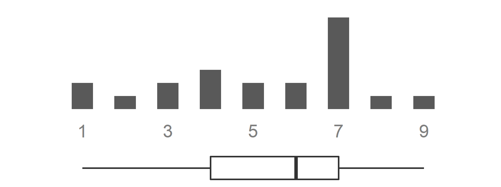

7 Round 3
7.1 E-questionnaire management through REDCap
Round 2 is over. You have now rephrased, added and/or fused statements from round 2 into new ones and are ready to start round 3.
There should be only type 1 questions in this round. The code is therefore simpler and run faster than in round 2.
The following steps should be done in 1 day:
Within your
round 3 REDCap project: replace all “xxx” with the texts of your actual statements. Each statement header should also indicate reference(s) to the question(s) in round 2 from which it was derived. Duplicate type 1 questions’ “skeleton” based on your needs, i.e., the number of questions per section that you wish to include in this e-questionnaireTest the e-questionnaire to verify comprehensiveness of the content and the absence of technical bugs
Move this
round 3 REDCap projectinto production mode - talk with your REDCap Admin if necessarySend the hyperlink to experts (participants) with a deadline for e-questionnaire completion ; together with this hyperlink, send their individualized result report from round 2 (output of Section 6.8.1)
You can now relax during 3-4 days, until the deadline is over.
Data collection can be observed in real time by accessing the ‘Dashboard’ Menu in REDCap. When getting close to the deadline, remember to send a personalized email to any experts who has not yet completed the e-questionnaire.
7.2 0_run_ME_dft3.R - Overview of steps
Once data collection for round 3 is over, you can open 0_run_ME_dft3.R. It will show you the order of files to update and run. It will upload, process and analyse the data and create reports.
7.3 Update data
- Run
./code/dft3/01a_dft3_update_data_with_REDCapR.R
This code will connect to the corresponding REDCap project using the token, downloads the raw data and metadata from the project, and save them as *.RData files. It also creates one *.xlsx table with the raw data, which can be used for quick checks.
7.3.1 Detail of outputs
| Folder | Output file | Description |
|---|---|---|
./data/redcap_data_raw/ |
dft3_metadata.RData |
Raw metadata |
./data/redcap_data_raw/ |
dft3_data_redcapr_raw.RData |
Raw data |
7.4 Recode data
- Update as required and run
./code/dft3/01b_dft3_recode_data.R
This code will process the raw data and the metadata downloaded in Section 7.3, in order to create the “clean” data and metadata tables. In particular, it will:
correct labeling errors, typos, etc.
simplify labeling
define the lists of variables by type (1)
do a conditional deduplication (in case one or several participants have filled in several REDCap records per person -> keep the latest answer choice and all comments)
save clean data and metadata in RData format

- create visuals (*.png) for all type 1 questions, showing the distribution of answers on a 1 to 9 scale and a boxplot - see Figure 7.1
7.4.1 Detail of outputs
| Folder | Output file | Description |
|---|---|---|
./data/dft3/ |
dft3_data_clean.RData |
Clean data |
./data/dft3/ |
dft3_lookup_final.RData |
Clean lookup table (metadata) |
./output/check/ |
*.xlsx |
Various xlsx files that can be used for checks or sharing |
./output/png/ |
dft3_*_s*_type1.png |
Visuals for all type 1 questions |
7.5 Prepare tables without participant id
- Run
./code/dft3/02a_dft3_prepare_tables_without_participant_id.R
This code will analyse the “clean” data (generated in Section 7.4) to create the group result tables (= statistical and graphical summaries).
It automatically calls code ./code/dft3/01c_dft3_define_cols.R.
It also creates and saves in *.xlsx format the table containing only the “no opinion” responses, allowing a quick check if necessary.
7.5.1 Detail of outputs
| Folder | Output file | Description |
|---|---|---|
./output/RData/ |
dft3_type1_zz_combined.RData |
Table with results of all type 1 questions |
./output/RData/ |
dft3_dt_comments_m.RData |
Table with all comments |
./output/check/ |
dft3_type1_zz0_no_opinion.xlsx |
Quick check table of ‘no opinion’ responses |
7.6 Update introductory texts
Update the content of your introductory texts (*.docx) if needed, as indicated in the Section 5.6.
Run
./code/00_update_texts_intro.R
This code updates the local directory of texts used in the introduction of the report sections (from the available and up-to-date directory on the server).
7.7 Publish the generic report
The number of sections and the number of questions (all type 1) within these sections will vary between projects.
The list of sections needs to be defined manually in 000_parameters.R.
Publish the generic report by running the lines below in
0_run_ME_dft3.R### . publish Rmd ---- ### .. dft3_report_generic.Rmd ---- input <- "analysis/dft3/dft3_report_generic.Rmd" output_file <- here::here('output', 'reports', 'dft3', stringr::str_glue("dft3_report_generic_{Sys.Date()}.docx")) rmarkdown::render( input = input, output_file = output_file)
This code will create the word document (“generic report”) inserting the introductory texts (updated in Section 7.6) and the results tables (created in Section 7.5), based on a reference word template.
It automatically calls ./code/dft3/01c_dft3_define_cols.R. and ./analysis/00_child_intro_method.Rmd. Then, for each section, it calls ./analysis/dft3/dft3_child_section.Rmd, which will create tables for all questions (type 1) that are in the section (conditional for loop), by running one code:
./code/03a_create_flextable_results_type_1_generic.R: creates the result table for type 1 statements in the section and for their comments
7.7.1 Detail of outputs
| Folder | Output file | Description |
|---|---|---|
./output/reports/dft3 |
dft3_report_generic_date_YYYY-MM-DD.docx |
Generic report with date |
7.8 Publish all individualized reports
Publish individualized reports - one for each respondent of round 3 - by running the lines below in
0_run_ME_dft3.R### .. 05_dft3_to_render_individual_reports.R ------------------------------ ### TAKES time ... have a coffee, a walk, a nice chat with someone ... source(here::here('code', 'dft3', '05_dft3_to_render_individual_reports.R'), encoding = 'UTF-8')
This code will create the word document for each participant (“individualized report”), based on a word template, by inserting the email of the participant, the introductory texts (updated in Section 7.6), as well as the group result tables with individual answers for each statement.
The code ./analysis/dft3/dft3_report_per_participant.Rmd (automatically called within ./code/dft3/05_dft3_to_render_individual_reports.R) uses an iterative loop to create the individualized report for each participant by calling automatically:
./code/dft3/01c_dft3_define_cols.Rand./code/dft3/02b_dft3_prepare_tables_participants.R: adds results of the participant to the generic table
It will then call ./analysis/00_child_intro_method.Rmd as well as, for each section, ./analysis/dft3/dft3_child_section.Rmd, which will create tables for all questions (type 1) that are in the section (conditional for loop), by running one code:
./code/04a_create_flextable_results_type_1_participants.R: creates the result table for type 1 statements with individual answers in the section and for their comments
7.8.1 Detail of outputs
| Folder | Output file | Description |
|---|---|---|
/output/reports/dft3/report_by_participant/ |
dft3_report_participant_X_YYYY-MM-DD.docx |
Individualized reports (one per participant) with date |
Congratulations: you are now ready to create your overall synthesis report! Individualized reports created in Section 7.8 can be sent to participants for their information.